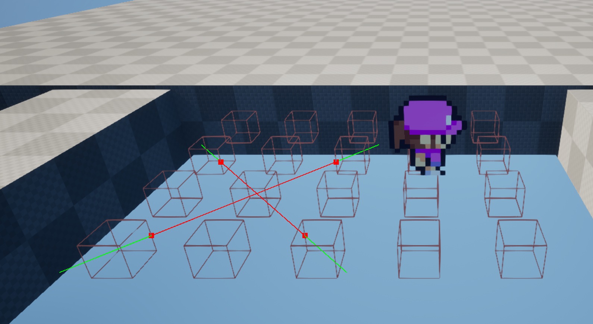
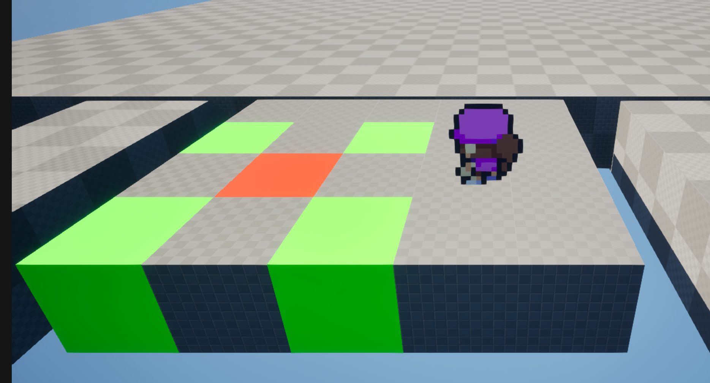
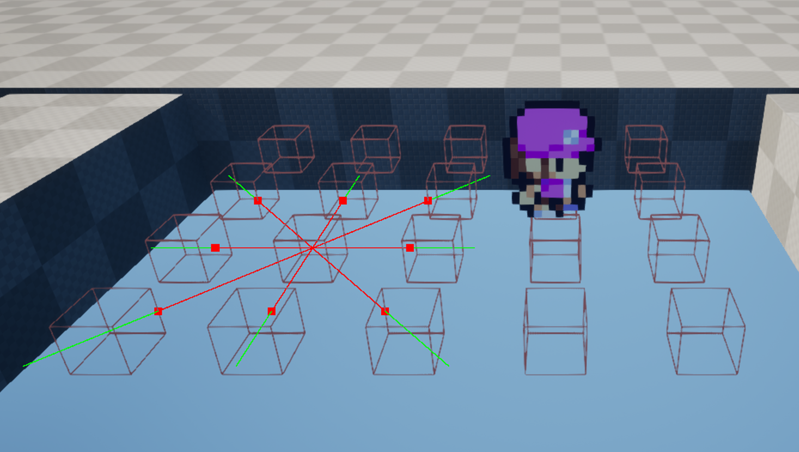
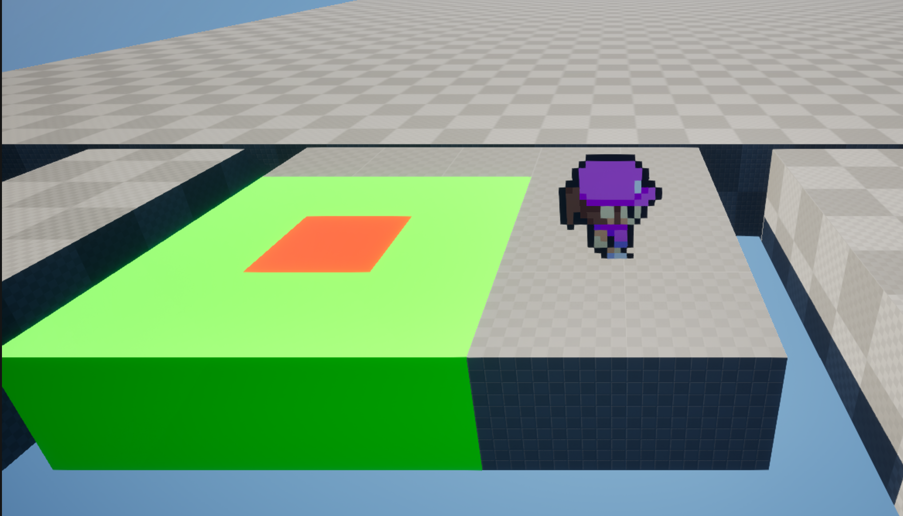
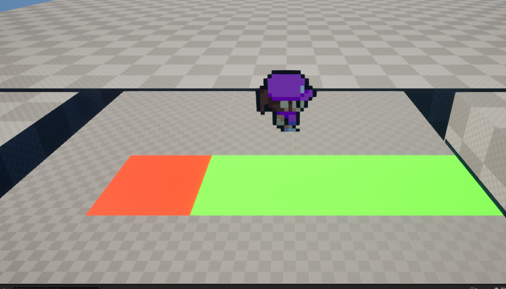
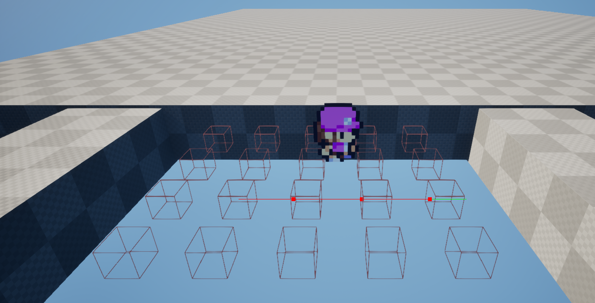

Echronia: Devlog #2.5
Conor Kirkby
20/11/25






Click to Enlarge
TLDR
- Setup the free camera movement
- Setup a smooth transition between free and combat mode.
- Devised a system for the grid pieces to be connected and communicate with each other.
- Realised this system isnt performant and I can do a better one.
What Happened
Hey everyone!. This is going to be a short one, the reason its short is because I spent a long time creating a system only to realise its not whats best for the project. It happens. What I did want however is to show this system off before it gets replaced, because even though it isn't performant or the best practise for programming. Im still proud I got it to work at all.
Before that quickly, I also managed to setup a nice smooth system where the character can switch between free mode, this is where the player can move freely with normal input, and the combat mode, This is where the player can only move on their turn and only being able to move on grid pieces.This is best shown off in the devlog video.
Moving on. So of course since this game's combat will be using a grid based system for movement and attacks, I needed the grid pieces to be able to communicate with each other and share information. The first thing that cropped into my mind when thinking about this is that tracing could be used for this, and it was silly of me to start making it without a second thought. Even so it was a lot of fun. I hid small collision boxes inside the cube that the trace would hit nicely and it worked perfectly fine! I thought since the tracing would only happen at specific points during combat that it wouldnt be much of an issue and I'm probably correct, however I could never forgive myself if I couldnt put the best work I can into this.
So what I am going to do moving forward, is to begin creating a grid-based system where the pieces are all stored in a manager and each have a set position X = 1, Y = 5 etc... This will be significantly more setup time for each combat encounter, however it is undoubtedly a much better system for performance and function calls. I will begin creating this system going forwar and by the time of the next devlog will have hopefully have made progress!
Code
Player Character Script
// Created by Snow Paw Games
#pragma once
#include "CoreMinimal.h"
#include "PaperZDCharacter.h"
#include "EnhancedInputSubsystems.h"
#include "PlayerCharacter.generated.h"
class ACombatCameraOperator;
class UCharacter_Inventory;
/**
*
*/
UCLASS()
class TFCOE_API APlayerCharacter : public APaperZDCharacter
{
GENERATED_BODY()
APlayerCharacter();
public:
DECLARE_DYNAMIC_MULTICAST_DELEGATE_OneParam(FOnBoardPieceClicked, AActor*, BoardPiece);
UPROPERTY(BlueprintAssignable, Category="Events")
FOnBoardPieceClicked OnBoardPieceClicked;
protected:
// Input Mapping & Actions //
UPROPERTY(EditAnywhere, BlueprintReadWrite, Category = "Input|MappingContext")
UInputMappingContext* MappingContext = nullptr;
UPROPERTY(EditAnywhere, BlueprintReadWrite, Category = "Input|Actions")
UInputAction* MoveAction = nullptr;
UPROPERTY(EditAnywhere, BlueprintReadWrite, Category = "Input|Actions")
UInputAction* SprintAction = nullptr;
UPROPERTY(EditAnywhere, BlueprintReadWrite, Category = "Input|Actions")
UInputAction* InteractAction = nullptr;
UPROPERTY(EditAnywhere, BlueprintReadWrite, Category = "Input|Actions")
UInputAction* CombatClickAction = nullptr;
// Settings
UPROPERTY(EditAnywhere, BlueprintReadWrite, Category = "Settings|Movement")
bool MovementEnabled = true;
UPROPERTY(EditAnywhere, BlueprintReadWrite, Category = "Settings|Movement")
bool CameraMovementEnabled = false;
UPROPERTY(EditAnywhere, BlueprintReadWrite, Category = "Settings|Movement")
float WalkSpeed = 400.0f;
UPROPERTY(EditAnywhere, BlueprintReadWrite, Category = "Settings|Movement")
float SprintSpeed = 700.0f;
// Combat References
UPROPERTY(EditAnywhere, BlueprintReadWrite, Category = "Settings|Combat")
TSoftClassPtr AIPlayerDummyClass = nullptr;
UPROPERTY(EditAnywhere, BlueprintReadWrite, Category = "Settings|Combat")
TSoftClassPtr CameraOperatorClass = nullptr;
UPROPERTY(EditAnywhere, BlueprintReadWrite, Category = "Settings|Combat")
bool CombatModeActivated = false;
UPROPERTY(VisibleAnywhere, BlueprintReadOnly, Category = "Settings|Combat")
AActor* AIPlayerDummy = nullptr;
UPROPERTY(VisibleAnywhere, BlueprintReadOnly, Category = "Settings|Combat")
ACombatCameraOperator* CameraOperator = nullptr;
// Components
UPROPERTY()
UCharacterMovementComponent* MovementComponent = nullptr;
UPROPERTY(VisibleAnywhere, BlueprintReadOnly, Category = "Components")
UCharacter_Inventory* CharacterInventory = nullptr;
UPROPERTY()
APlayerController* PlayerController = nullptr;
// Functions
virtual void BeginPlay() override;
virtual void SetupPlayerInputComponent(UInputComponent* PlayerInputComponent) override;
void InitialiseMovementComponent();
// Combat Functions
void EnterCombatMode();
void ExitCombatMode();
void AsyncLoadDummy();
void SetMainActorHidden(bool SetHidden);
void DestroyDummy();
void SpawnAndSetCameraOperator();
void ReturnAndDestroyCameraOperator();
UFUNCTION(BlueprintCallable, Category = "Settings")
void UpdatePlayerCombatState(bool CombatEnabled);
// Input Functions
void MoveTrigger(const FInputActionValue& Value);
UFUNCTION(BlueprintCallable, Category = "Settings")
void ResetMovement();
void SprintTrigger();
void SprintEnd();
void InteractTrigger();
void CombatClickTrigger();
// Getter & Setter
UCharacter_Inventory* GetInventory() const
{
return CharacterInventory;
}
UFUNCTION(BlueprintCallable, Category = "Settings")
void SetLocomotion(const bool EntityMovement, const bool CameraMovement)
{
MovementEnabled = EntityMovement;
CameraMovementEnabled = CameraMovement;
}
UFUNCTION(BlueprintCallable, Category = "Settings")
AActor* GetPlayerAIDummy() const
{
return AIPlayerDummy;
}
UFUNCTION(BlueprintCallable, Category = "Settings")
ACombatCameraOperator* GetCameraOperator() const
{
return CameraOperator;
}
};
// Created by Snow Paw Games
#include "PlayerCharacter.h"
#include "Character_Inventory.h"
#include "CombatCameraOperator.h"
#include "EnhancedInputComponent.h"
#include "Engine/AssetManager.h"
#include "GameFramework/CharacterMovementComponent.h"
APlayerCharacter::APlayerCharacter()
{
CharacterInventory = CreateDefaultSubobject(TEXT("Character Inventory"));
}
void APlayerCharacter::BeginPlay()
{
Super::BeginPlay();
// Gets the movement component and stores it for future use.
InitialiseMovementComponent();
PlayerController = Cast(GetController());
}
// Initialises the player input system
void APlayerCharacter::SetupPlayerInputComponent(UInputComponent* PlayerInputComponent)
{
Super::SetupPlayerInputComponent(PlayerInputComponent);
if (const APlayerController* InitPlayerController = Cast(GetController()))
{
if (UEnhancedInputLocalPlayerSubsystem* Subsystem = ULocalPlayer::GetSubsystem(InitPlayerController->GetLocalPlayer()))
{
if (MappingContext)
{
Subsystem->AddMappingContext(MappingContext, 0);
}
}
}
// Initialises the action bindings
if (UEnhancedInputComponent* EnhancedInputComponent = Cast(PlayerInputComponent))
{
// Insert Action bindings here
// Binds the movement action to the input variables
if (MoveAction)
{
EnhancedInputComponent->BindAction(MoveAction, ETriggerEvent::Triggered, this, &APlayerCharacter::MoveTrigger);
EnhancedInputComponent->BindAction(MoveAction, ETriggerEvent::Canceled, this, &APlayerCharacter::ResetMovement);
EnhancedInputComponent->BindAction(MoveAction, ETriggerEvent::Completed, this, &APlayerCharacter::ResetMovement);
}
// Binds the interact action to the triggered function
if (InteractAction)
{
EnhancedInputComponent->BindAction(InteractAction, ETriggerEvent::Started, this, &APlayerCharacter::InteractTrigger);
}
// Binds the sprint action to the trigger for starting, and the completed to the end function
if (SprintAction)
{
EnhancedInputComponent->BindAction(SprintAction, ETriggerEvent::Started, this, &APlayerCharacter::SprintTrigger);
EnhancedInputComponent->BindAction(SprintAction, ETriggerEvent::Completed, this, &APlayerCharacter::SprintEnd);
EnhancedInputComponent->BindAction(SprintAction, ETriggerEvent::Canceled, this, &APlayerCharacter::SprintEnd);
}
if (CombatClickAction)
{
EnhancedInputComponent->BindAction(CombatClickAction, ETriggerEvent::Started, this, &APlayerCharacter::CombatClickTrigger);
}
}
}
void APlayerCharacter::InitialiseMovementComponent()
{
// Gets and caches the movement component for use
if (UCharacterMovementComponent* CharacterMovementComp = GetCharacterMovement())
{
MovementComponent = CharacterMovementComp;
}
}
void APlayerCharacter::UpdatePlayerCombatState(const bool CombatEnabled)
{
if (PlayerController)
{
if (CombatEnabled)
{
EnterCombatMode();
}
else
{
ExitCombatMode();
}
}
}
void APlayerCharacter::MoveTrigger(const FInputActionValue& Value)
{
const FVector2D MovementVector = Value.Get();
if (CameraMovementEnabled)
{
if (CameraOperator)
{
CameraOperator->AddMovementInput(FVector(1, 0, 0), MovementVector.X);
CameraOperator->AddMovementInput(FVector(0, 1, 0), MovementVector.Y);
}
}
if (MovementEnabled)
{
// Movement for X vector
AddMovementInput(FVector(1, 0, 0), MovementVector.X);
// Movement for Y vector
AddMovementInput(FVector(0, 1, 0), MovementVector.Y);
}
}
void APlayerCharacter::ResetMovement()
{
MovementComponent->StopMovementImmediately();
}
void APlayerCharacter::SprintTrigger()
{
if (MovementComponent)
{
// Sets the movement speed to be the sprint speed on sprint start
MovementComponent->MaxWalkSpeed = SprintSpeed;
}
}
void APlayerCharacter::SprintEnd()
{
if (MovementComponent)
{
// Sets the movement speed to be the walk speed on the sprint end
MovementComponent->MaxWalkSpeed = WalkSpeed;
}
}
void APlayerCharacter::InteractTrigger()
{
UE_LOG(LogTemp, Warning, TEXT("The player has interacted with something"))
CharacterInventory->AddToGeneralItems("Scrap", FMath::RandRange(1, 4));
const int* Amount = CharacterInventory->GetGeneralItemList().Find("Scrap");
UE_LOG(LogTemp, Error, TEXT("You now have %i Scrap metal"), *Amount)
}
void APlayerCharacter::CombatClickTrigger()
{
if (PlayerController)
{
// Creates an array of types to search for. Only want world dynamic to be triggered
TArray> ObjectTypes;
ObjectTypes.Add(UEngineTypes::ConvertToObjectType(ECC_WorldDynamic));
// Checks what the mouse is clicking on, the aim is to detect board pieces only
FHitResult HitResult;
PlayerController->GetHitResultUnderCursorForObjects(ObjectTypes, false, HitResult);
if (HitResult.bBlockingHit)
{
// Broadcasts back to blueprints which was hit, where then I can do checks etc...
OnBoardPieceClicked.Broadcast(HitResult.GetActor());
}
}
}
void APlayerCharacter::EnterCombatMode()
{
// The combat mode is enabled, the player will no longer be visible and the dummy player will activate
CombatModeActivated = true;
SetLocomotion(false, true);
PlayerController->bShowMouseCursor = true;
// Loads the AI Dummy.
AsyncLoadDummy();
// Spawns the camera actor and sets the camera to this.
SpawnAndSetCameraOperator();
// Sets the main player to be hidden in the game so that it cannot interfere
SetMainActorHidden(true);
}
void APlayerCharacter::ExitCombatMode()
{
// Combat is over or not activated, the player will return to visibility and control restored.
CombatModeActivated = false;
SetLocomotion(true, false);
PlayerController->bShowMouseCursor = false;
// Sets the invisible player to the dummies location and ends it.
DestroyDummy();
// Blends the camera back to the player location and destroys the operator.
ReturnAndDestroyCameraOperator();
// Returns the main player character to be visible.
SetMainActorHidden(false);
}
void APlayerCharacter::AsyncLoadDummy()
{
// Async loads the dummy player character for use with the combat systems.
UAssetManager::GetStreamableManager().RequestAsyncLoad(AIPlayerDummyClass.ToSoftObjectPath(), FStreamableDelegate::CreateLambda([this]
{
if (UClass* LoadedClass = Cast(AIPlayerDummyClass.Get()))
{
AIPlayerDummy = GetWorld()->SpawnActor(LoadedClass, GetActorLocation(), GetActorRotation());
}
else
{
UE_LOG(LogTemp, Error, TEXT("Player Character: Attempt to load AI player, Loaded Class failure"))
}
}));
}
void APlayerCharacter::SetMainActorHidden(const bool SetHidden)
{
if (SetHidden)
{
// This is a tiny delay to ensure that the switch has time to happen without any flashes.
FTimerHandle DelayBeforeAction;
TWeakObjectPtr SafeThis = this;
GetWorld()->GetTimerManager().SetTimer(DelayBeforeAction, [SafeThis]
{
if (SafeThis.IsValid())
{
SafeThis->SetActorHiddenInGame(true);
}
}, 0.1f, false);
}
else
{
SetActorHiddenInGame(false);
}
}
void APlayerCharacter::DestroyDummy()
{
// Places the hidden player in the exact spot as the AI dummy so that it can resume control seemlessly
if (AIPlayerDummy)
{
SetActorLocation(AIPlayerDummy->GetActorLocation());
SetActorRotation(AIPlayerDummy->GetActorRotation());
AIPlayerDummy->Destroy();
}
}
void APlayerCharacter::SpawnAndSetCameraOperator()
{
UAssetManager::GetStreamableManager().RequestAsyncLoad(CameraOperatorClass.ToSoftObjectPath(), FStreamableDelegate::CreateLambda([this]
{
if (UClass* LoadedClass = Cast(CameraOperatorClass.Get()))
{
// Adds a little offset to the spawn location
const FVector SpawnLocation = FVector(GetActorLocation().X, GetActorLocation().Y, GetActorLocation().Z + 40.0f);
CameraOperator = GetWorld()->SpawnActor(LoadedClass, SpawnLocation, GetActorRotation());
PlayerController->SetViewTargetWithBlend(CameraOperator, 0.5f);
}
else
{
UE_LOG(LogTemp, Error, TEXT("Player Character: Spawn Camera Operator load async failed"))
}
}));
}
void APlayerCharacter::ReturnAndDestroyCameraOperator()
{
// Resets the camera to be the player character
PlayerController->SetViewTargetWithBlend(this, 1.0f);
if (!CameraOperator) return;
// This timer is to allow the camera blend time before the destroy actor happens.
FTimerHandle BlendDelayTimerHandle;
TWeakObjectPtr SafeThis = this; // Captures a reference to the player
TWeakObjectPtr SafeCameraOperator = CameraOperator; // Captures a reference to the camera operator
GetWorld()->GetTimerManager().SetTimer(BlendDelayTimerHandle, [SafeThis, SafeCameraOperator]()
{
// Checks to make sure neither become invalid whilst the timer is running, this would result in a crash if so.
if (!SafeThis.IsValid()) return;
if (SafeCameraOperator.IsValid())
{
SafeCameraOperator->Destroy();
}
}, 1.5f, false);
}
Player Character Script
Camera Operator Script
// Created by Snow Paw Games
#pragma once
#include "CoreMinimal.h"
#include "GameFramework/Character.h"
#include "CombatCameraOperator.generated.h"
UCLASS()
class TFCOE_API ACombatCameraOperator : public ACharacter
{
GENERATED_BODY()
public:
// Sets default values for this character's properties
ACombatCameraOperator();
protected:
// Called when the game starts or when spawned
virtual void BeginPlay() override;
UPROPERTY()
UCharacterMovementComponent* MovementComponent = nullptr;
public:
void InitialiseMovementComponent();
};
// Created by Snow Paw Games
#include "CombatCameraOperator.h"
#include "GameFramework/CharacterMovementComponent.h"
// Sets default values
ACombatCameraOperator::ACombatCameraOperator()
{
// Set this character to call Tick() every frame. You can turn this off to improve performance if you don't need it.
PrimaryActorTick.bCanEverTick = false;
}
// Called when the game starts or when spawned
void ACombatCameraOperator::BeginPlay()
{
Super::BeginPlay();
InitialiseMovementComponent();
}
void ACombatCameraOperator::InitialiseMovementComponent()
{
// Gets and caches the movement component for use
if (UCharacterMovementComponent* CharacterMovementComp = GetCharacterMovement())
{
MovementComponent = CharacterMovementComp;
// Since this is a flying actor sets the movement mode to flying
MovementComponent->SetMovementMode(MOVE_Flying);
}
}
Camera Operator Script
Board Piece Script
// Created by Snow Paw Games
#pragma once
#include "CoreMinimal.h"
#include "GameFramework/Actor.h"
#include "BoardPiece.generated.h"
class UBoxComponent;
UENUM(BlueprintType)
enum EPieceState
{
Enabled UMETA(DisplayName = "Enabled"),
Disabled UMETA(DisplayName = "Disabled"),
Occupied UMETA(DisplayName = "Occupied"),
};
UENUM(BlueprintType, meta = (Bitflags, BitmaskEnum="ETraceDirections", UseEnumValuesAsMaskValuesInEditor="true"))
enum class ETraceDirections : uint8
{
None = 0 UMETA(Hidden),
Up = 1 << 0,
Down = 1 << 1,
Left = 1 << 2,
Right = 1 << 3,
UpperLeft = 1 << 4,
UpperRight = 1 << 5,
LowerLeft = 1 << 6,
LowerRight = 1 << 7
};
ENUM_CLASS_FLAGS(ETraceDirections)
struct FDirectionBinding
{
ETraceDirections Direction;
TFunction BindAction;
};
UCLASS()
class TFCOE_API ABoardPiece : public AActor
{
GENERATED_BODY()
public:
ABoardPiece();
protected:
UPROPERTY(EditAnywhere, BlueprintReadWrite, Category = "Settings")
TEnumAsByte CurrentPieceState = Enabled;
UPROPERTY(EditAnywhere, BlueprintReadWrite, Category = "Settings")
AActor* CurrentOccupier = nullptr;
virtual void BeginPlay() override;
public:
UFUNCTION(BlueprintCallable, Category = "Board Piece")
TArray ActivateCombatTrace(UPARAM(meta = (Bitmask, BitmaskEnum = "ETraceDirections")) int Directions, float CardinalTraceSize, float
OrdinalTraceSize);
TArray PerformDirectionalTrace(TArray DirectionArray, float TraceSize);
// Getter and Setter
UFUNCTION(BlueprintCallable, Category = "Board Piece")
void SetPieceState(const EPieceState NewPieceState)
{
CurrentPieceState = NewPieceState;
}
UFUNCTION(BlueprintCallable, Category = "Board Piece")
EPieceState GetPieceState() const
{
return CurrentPieceState;
}
UFUNCTION(BlueprintCallable, Category = "Board Piece")
AActor* GetCurrentOccupier() const
{
return CurrentOccupier;
}
UFUNCTION(BlueprintCallable, Category = "Board Piece")
void SetCurrentOccupier(AActor* NewOccupier)
{
if (NewOccupier)
{
CurrentOccupier = NewOccupier;
}
}
};
// Created by Snow Paw Games
#include "BoardPiece.h"
#include "Engine/World.h"
#include "Kismet/KismetSystemLibrary.h"
ABoardPiece::ABoardPiece()
{
}
void ABoardPiece::BeginPlay()
{
Super::BeginPlay();
}
TArray ABoardPiece::ActivateCombatTrace(int Directions, const float CardinalTraceSize, const float OrdinalTraceSize)
{
// Per cube for cardinal direction is 150 trace size.
// Per cube for ordinal direction is
TArray CardinalDirectionsToTrace;
TArray OrdinalDirectionsToTrace;
// Cardinal Directions
const FVector UpVector = FVector(0, -1, 0);
const FVector DownVector = FVector(0, 1, 0);
const FVector RightVector = FVector(1, 0, 0);
const FVector LeftVector = FVector(-1, 0, 0);
// Ordinal Directions
const FVector UpperLeftVector = FVector(-1, -1, 0).GetSafeNormal();
const FVector UpperRightVector = FVector(1, -1, 0).GetSafeNormal();
const FVector LowerLeftVector = FVector(-1, 1, 0).GetSafeNormal();
const FVector LowerRightVector = FVector(1, 1, 0).GetSafeNormal();
// Creates a mini binding function that if called, adds the direction linked to the directions to be checked.
const ETraceDirections TraceFlags = static_cast(Directions);
const TArray DirectionBindings =
{
{ETraceDirections::Up, [&]() {CardinalDirectionsToTrace.Add(UpVector);}}, //Adds the up direction
{ETraceDirections::Down, [&]() {CardinalDirectionsToTrace.Add(DownVector);}}, // Adds the down direction
{ETraceDirections::Right, [&]() {CardinalDirectionsToTrace.Add(RightVector);}}, // Adds the right vector
{ETraceDirections::Left, [&]() {CardinalDirectionsToTrace.Add(LeftVector);}}, // Adds the left vector
{ETraceDirections::UpperLeft, [&]() {OrdinalDirectionsToTrace.Add(UpperLeftVector);}}, // Adds the upper left vector
{ETraceDirections::UpperRight, [&]() {OrdinalDirectionsToTrace.Add(UpperRightVector);}}, // Adds the upper right vector
{ETraceDirections::LowerLeft, [&]() {OrdinalDirectionsToTrace.Add(LowerLeftVector);}}, // Adds the lower left vector
{ETraceDirections::LowerRight, [&]() {OrdinalDirectionsToTrace.Add(LowerRightVector);}} // Adds the lower right vector
};
// Checks which flag directions were set and triggers the action to bind it to the array of directions to check.
for (const FDirectionBinding& Binding : DirectionBindings)
{
if (EnumHasAllFlags(TraceFlags, Binding.Direction))
{
Binding.BindAction();
}
}
const TArray CardinalHitResults = PerformDirectionalTrace(CardinalDirectionsToTrace, CardinalTraceSize);
const TArray OrdinalHitResults = PerformDirectionalTrace(OrdinalDirectionsToTrace, OrdinalTraceSize);
TArray FinalHitResults;
FinalHitResults.Append(CardinalHitResults);
FinalHitResults.Append(OrdinalHitResults);
return FinalHitResults;
}
TArray ABoardPiece::PerformDirectionalTrace(TArray DirectionArray, const float TraceSize)
{
if (!DirectionArray.IsEmpty())
{
TArray HitResults;
for (FVector Direction : DirectionArray)
{
FVector TraceStart = GetActorLocation();
FVector TraceEnd = TraceStart + Direction * TraceSize;
TArray ActorsToIgnore;
ActorsToIgnore.Add(this);
TArray> ObjectTypes;
ObjectTypes.Add(UEngineTypes::ConvertToObjectType(ECC_Pawn));
UKismetSystemLibrary::LineTraceMultiForObjects(GetWorld(), TraceStart, TraceEnd, ObjectTypes,
false, ActorsToIgnore, EDrawDebugTrace::Persistent, HitResults, true);
}
return HitResults;
}
return TArray();
}